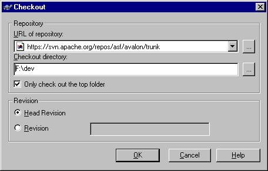

The subversion book is an excellent resource for users and administrators, it can obtained here.
You can also browse the repository using ViewSVN here.
There are several options available to you for retrival of sources via Subversion. Subversion can be run from the command line (Linux or Windows) and there are also an increasing number of GUI's and plugin's.
The SVN utilities are available as native Windows, Linux, and solaris binaries. The source is also avaiable for other operating systems. The binaries and source can be obatined from the Subversion download page..
To get the current development project, run the following command
svn co https://svn.apache.org/repos/asf/avalon/trunk avalon
TortoiseSVN is an excellent extension for the Windows Explorer which integrates SVN.
After you've created a folder where you want to check out the sources to, right-click and select SVN Checkout. Then, fill out the settings like in the screenshot below, and then click ok.
